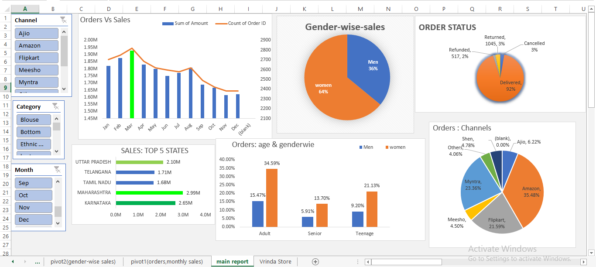
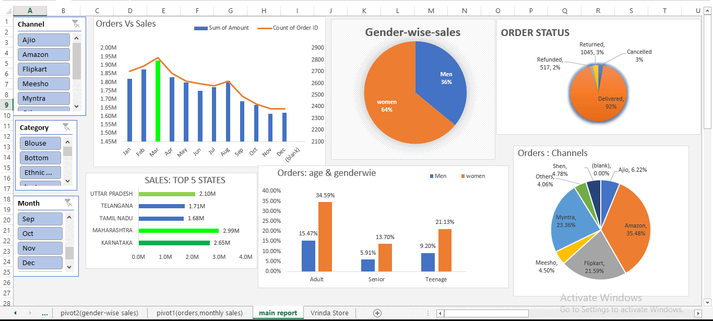

'Customer Insights To Grow Sales In Upcoming Year .
the store wants to create an annual sales report so that , they can understand their customers and grow more sales in upcoming year.


Analysis of sales data revealed important patterns and opportunities:
The dashboard reveals that while Amazon leads as a channel and female customers, especially adults and teenagers, are the primary audience, there is a noticeable seasonal peak in early months. The company’s delivery efficiency is high, with most orders successfully fulfilled and few returns or cancellations. Focusing marketing efforts on women in Maharashtra, Karnataka, and other top states, particularly during peak months, could further boost performance and sales growth.